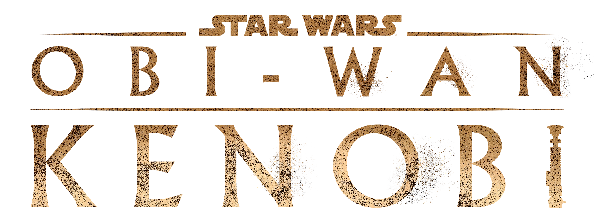
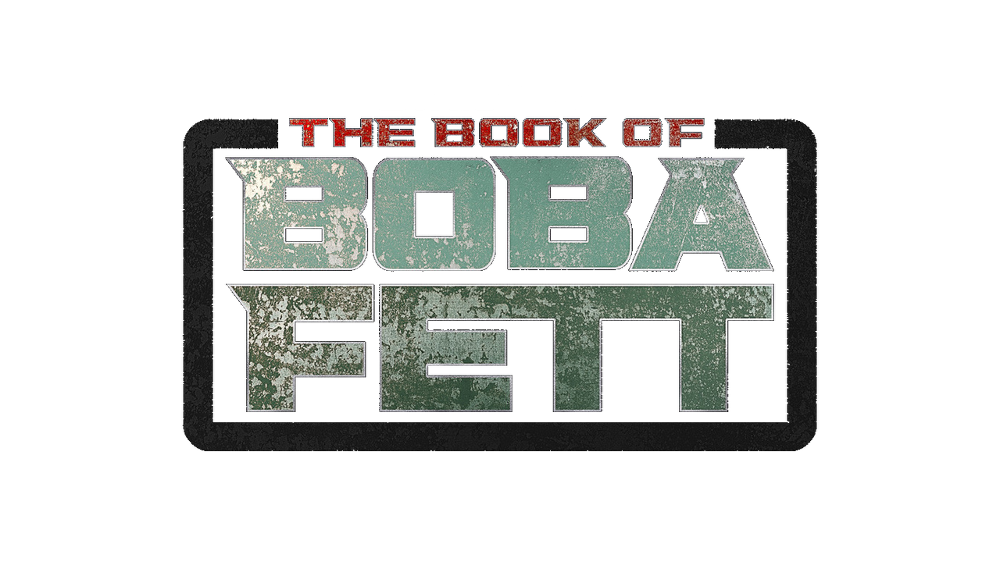
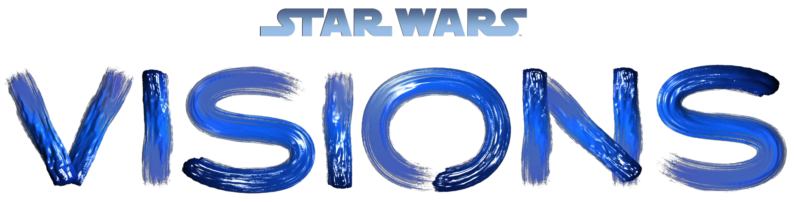

Andor in my opinion was a pretty good success I would rate it probably a 7.9/10. I loved being able to see Diego Luna on screen again after his debut on Rouge One which also was a box office hit. I really enjoyed how complex the series was and that it wasn't a basic story line. I also liked how the show followed several different characters and looked at their story arcs. For example, Mon Motha, Luthen Rael, and Syril Karn. There were several highlights within the series such as the prison breakout episode, and robbing the Imperial Vault. This gave the movie a heist feel to it, which added another layer to the movie. I wouldn't rate it as high though because I felt lost many times throughout the series because I was unsure what was happening, because of how many characters there were. I did like the buildup though of the story going from episode to episode, allowing for more connection and excitment.
Obi-Wan Kenobi for me was straight nostalgia, overall I would give it a 8.4/10. I thoroughly enjoyed watching Anakin Skywalker and Obi-Wan Kenobi from the prequels fighting it out another time before the famous scene on the Death Star and after the trecherous scene on Mustafar. The anticipation of the fight between the master and apprentice was beyond exciting. One thing that I thought was complex with Darth Vader is that he had such a dark tone to his character, by killing off innocent people in villages. This showed the audience his pain that he is feeling after loosing Padme and his full conversion to the dark side. I also liked Obi-Wan's journey of watching Luke but also his interaction with Leah throughout the series which later connects in A New Hope with their relationship. Another thing that I enjoyed but that many others didn't were the inquesitors, I think they added another layer to the T.V. show by being a help to Vader as he hunts down countless force users accross the galaxy, but also seeing that they are being led by fear and anger. One thing that I wasn't as big a fan of was that Obi-Wan didn't keep up with his training on Tatooine, it made me wonder how he was supposed to protect Luke if he wasn't still practicing. Finally, I was fascinated by the flashbacks of training by Anakin and Obi-Wan which helped show their old relationship.
The Book of Boba Fett was a pretty big dissapointment in terms of all of the recent Star Wars shows to come out on Disney Plus. Overall I would rate it a 5.6/10. There were some good action sequences but the only thing that really saved it was the reentrance of The Mandalorian. I liked how we were able to see the escape from the sarlacc pit sequence, which was a huge comic book rumor about Boba Fett that came true, not to mention we also got the famous meme "Like a Bantha" which was pretty hilarious. It was overall pretty slow, and didn't show Boba Fett really being a bounty hunter but more of a slave of the tuskan raiders the entire time. Also many of the add on characters like the biker gang, or the "power rangers" added a more childlike feel to the show which I wasn't a fan of. There was a cool entrance to the character Cad Bane but I feel like they lacked on the physical aspects of the character, such as the face makeup. Finally, I loved watching the reentrance of Grogu and Mando but there were sometimes whole episodes dedicated to only them, and didn't have Boba Fett at all, which got me scratching my head. Overall, it would probably be a show that is a one time watch and maybe be revisited later.
The Mandalorian is an absolute classic and outright successful Strar Wars series. Overall I would rate it a 9.1/10. It adds both adventure and a family essence to the show. One thing that I thought was brilliant about it was that it allowed both hard core Star Wars fans as well as individuals who were new to Star Wars to both be able to watch together. They were able to impliment this by adding live action characters from Star Wars: The Clone Wars into the T.V. show but making each episode easy to understand. I enjoyed both seasons of the Mandolorian, and liked how they brought in "Baby Yoda" or Grogu to make it feel like a father son type vibe making it more family friendly. Another element that I was fascinated by was the Mandalorians search for happiness and that before we would see his disregard for others and his work alone mentality. While at the end of the seasons we see he is more open to working with others "even droids" which shows a better character arch within the show.
Visions was a very interesting concept for a T.V. show on Disney plus, it wasn't a usual product that is put out by LucasFilms. Overall I would rate it a 6.4/10 because it wasn't really my style of show especially in terms of Star Wars, because of the anime feel. I did think it was cool however communicating with different design and production studios to have them make their own version of what they see Star Wars as and the story that they could create. I did enjoy the first episode a lot I think there was definitely a samurai style which makes sense because the original concept art and style of the lightsaber and dueling came from the japanese samurai culture. One thing that was a little dissapointing about this series was that the episodes didn't connect to make one story, which I would of preferred. I think another thing that was a good and bad thing were the different styles of art with the characters I would have preffered that it was similar in style because some styles I did enjoy while others I didn't, however I understand why it happened the way that it did.
I'm stoked for all of the upcoming Star Wars content coming out on Disney Plus. Check out this video to see what all is coming out next!
Here is a beautiful graph about all of the Rotten Tomato Rankings of Star Wars Series and how they relate to the Rotton Tomatoes Rating versus the Audience Rating.